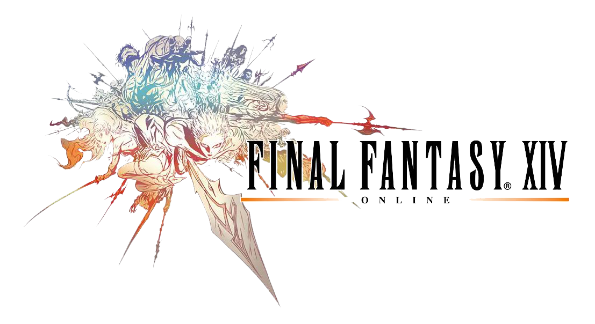
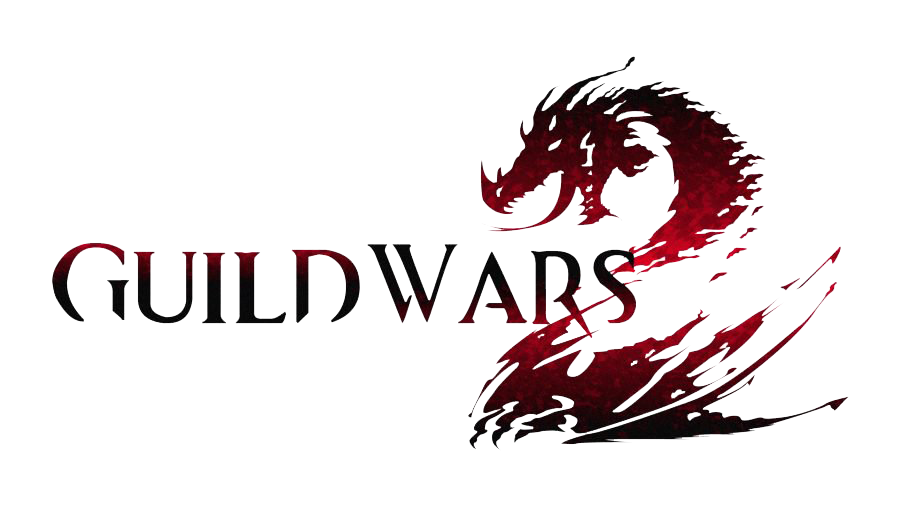
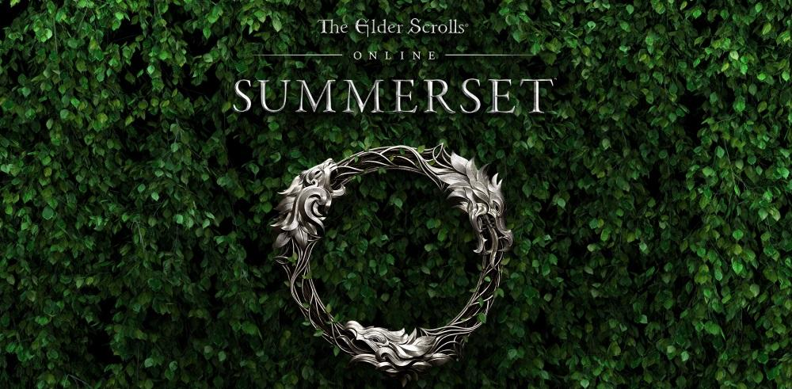
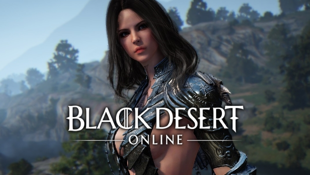

FRANK'S TOP 6 MMOS TO LOOK OUT FOR IN 2018
MMOs and MMORPGs are constantly being pumped out by companies trying to get their hold in the gaming market these days. That being said, many MMORPGs rarely hold up to the hype they get pre-release, and most crumble into failure after the first 2 years due a myriad of possible reasons from lack of content updates, too many bugs, or disinterested community, to list a few.
The following is my ranking of the top 6 MMOs that you should look into as we dive midway into 2018. Most of these are classics, and have been out for many years, tested and proven to be quality games worth every cent and second of your money and time. Let's dive in, shall we?
#1: World of Warcraft
My ranking: 9.36/10

#2: Final Fantasy XIV
My ranking: 9.32/10

#3: Guild Wars 2
My ranking: 9.16/10

#4: Elder Scrolls Online
My ranking: 8.98/10

#5: Black Desert Online
My ranking: 8.7/10

#6: Maplestory 2
My ranking: 8.6/10